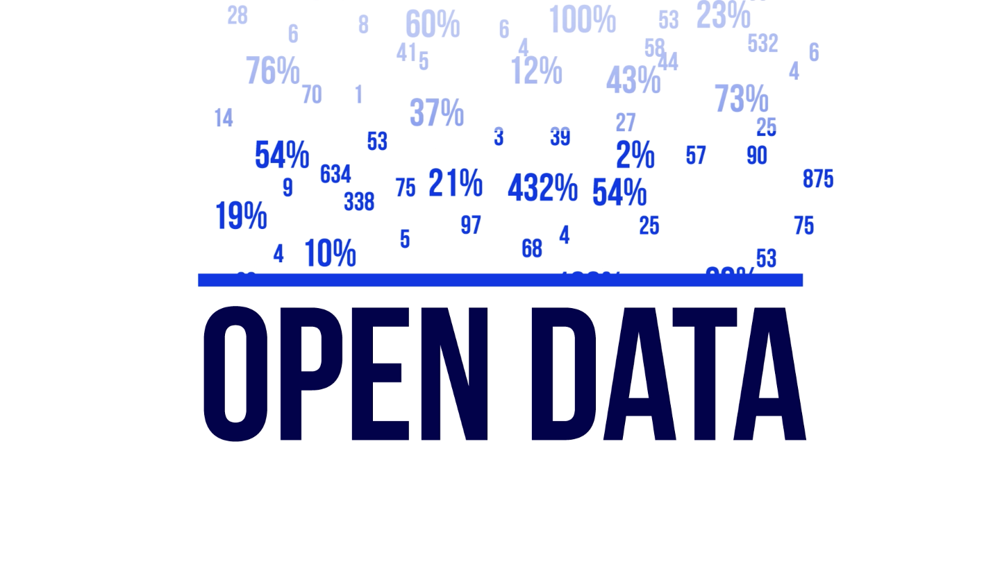
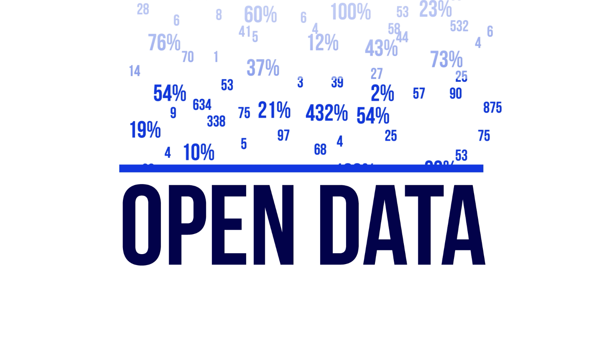

“République numérique”


 



- Centre-Val-de-Loire
- Auvergne-Rhone-Alpes
- Ile-de-France
- Centre-Val-de-Loire
- Auvergne-Rhone-Alpes
- Ile-de-France
- Centre-Val-de-Loire
- Auvergne-Rhone-Alpes
- Ile-de-France
- Centre-Val-de-Loire
- Auvergne-Rhone-Alpes
- Ile-de-France
63% : part des données publiées par du top
1,3% : part des données du flop
Désert de données : Auvergne-Rhône-Alpe
80,8% : part des données publiées par du top
3,6 : part des données publiées par du flop
Désert de données : Auvergne-Rhône-Alpe
50% : part données publiées par du top
3,2% : part des données publiées par du flop
Désert de données : aucun
57% : part des données publiées par du top
0,5% : part des données publiées par du flop
Désert de donnée : Corse
Données relevées : Top/flop non représentatif
Désert de donnée : Corse, à ce stade
Publications : équivalentes aux années 2013 & 2014 cumulées
Quelle répartition entre les régions et les thématiques ?
Cliquez sur chaque région pour visualiser la part de chaque mot-clé et le nombre de téléchargements correspondant.
Coûts des services
Urbanisme
Marché public
Environnement
Transport
Permis de construire
Equipements
Budget
Election
Culture
Education
Association
Subvention
PV et délibérations